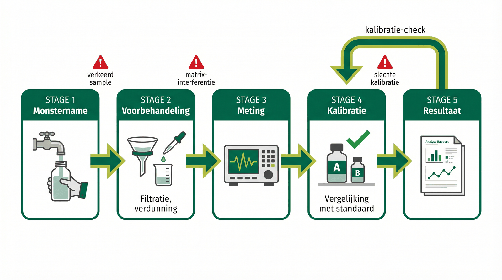
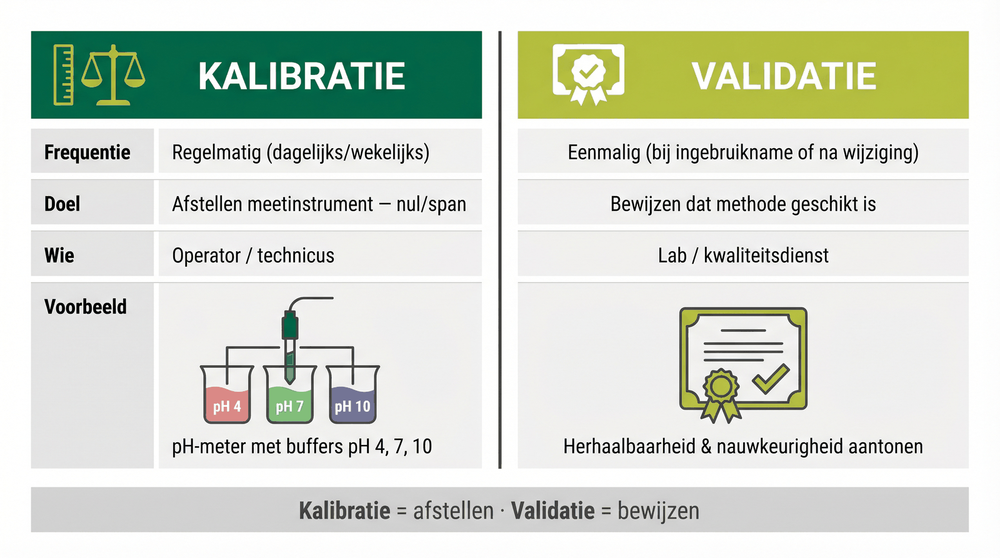
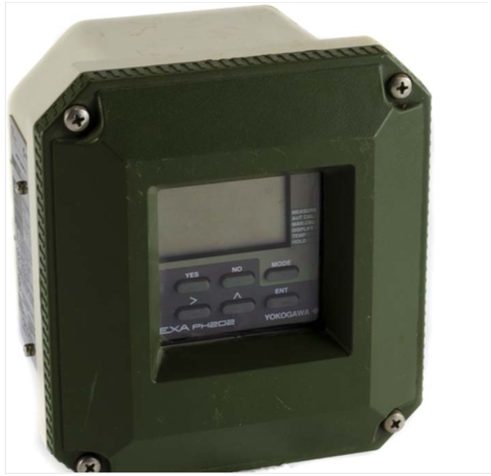
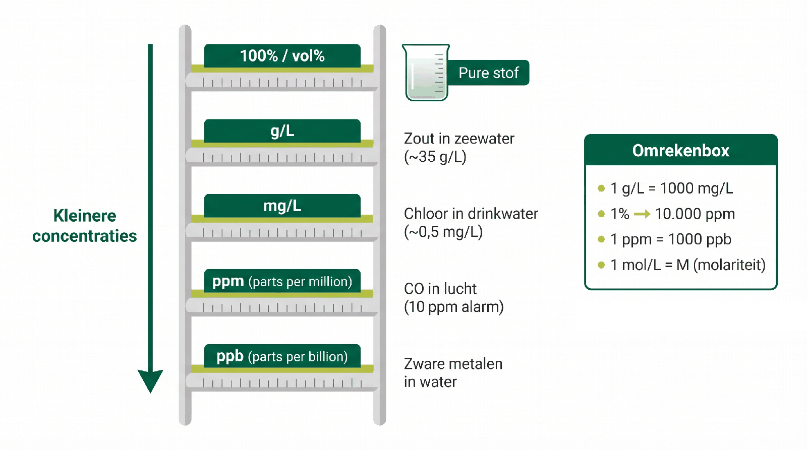

ANA – Module 2
2.1 Leerdoelen
- Studenten kunnen de termen sample, samplematrix, kalibratie en standaarden definiëren en uitleggen in een industriële context.
- Studenten kunnen beschrijven hoe kalibratie en standaarden worden gebruikt om nauwkeurige resultaten te garanderen in analytische chemie.
2.2 Wat is een sample en samplematrix?

Het analyseproces: van monstername tot meetresultaat
Sample (Monster)
Een sample (monster) is een kleine, zorgvuldig geselecteerde hoeveelheid materiaal die je neemt om te analyseren. Dit kan zowel een vloeistof, gas of een vaste stof zijn.
Vier kernpunten van een goed sample:
🎯 Representatief
Het sample is een goede afspiegeling van het geheel. Voorbeeld: bij benzine in een opslagtank moet het sample de gemiddelde eigenschappen van álle benzine vertegenwoordigen.
📑 Juiste grootte
Groot genoeg voor betrouwbare metingen, niet zo groot dat het lastig te hanteren wordt. Te klein = geen consistent resultaat; te groot = onnodig.
🔮 Correct genomen
De manier waarop je samplet is cruciaal. Bemonster je alleen van het oppervlak van een tank? Dan mis je zwaardere stoffen die naar de bodem zijn gezakt.
❄️ Juist bewaard
Sommige samples veranderen in de tijd. Benzine verliest lichte componenten. Samples vaak koelen, afsluiten of chemisch stabiliseren.
🔄 In Module 1 zagen we hoe cruciaal betrouwbare metingen zijn voor veiligheid. Maar zelfs de best gekalibreerde analyzer geeft onjuiste resultaten als het sample niet representatief is of als externe factoren zoals temperatuur en druk de meting beïnvloeden. Een goede sampling en begrip van de samplematrix zijn daarom even belangrijk als een correct gekalibreerde analyzer.
📖 Praktijkvoorbeeld
In een raffinaderij wordt elk uur een sample genomen van een benzinefractie. Als de operator te vaak enkel van boven in de tank bemonstert, zal hij een vertekend beeld krijgen doordat de toplaag niet representatief is voor de gehele tankinhoud. De door de analyser gevonden resultaten geven dan geen juist beeld van de totale inhoud van de tank.
📷 Monstername in het veld — operator neemt sample bij een procesinstallatie
Foto volgt
Samplematrix
De samplematrix is alles wat zich in het sample bevindt, behalve de specifieke stof die je wilt meten. Het is als het ware de “achtergrond” of “omgeving” waarin de te bepalen stof zich bevindt.
Drie belangrijke aspecten van de samplematrix:
🧬 Complexiteit
Eenvoudige matrices (zoals zuiver water) versus zeer complexe (bloed of ruwe olie met honderden componenten). Hoe complexer, hoe lastiger de analyse.
⚠️ Interferentie
Stoffen in de matrix met vergelijkbare eigenschappen als de doel-stof kunnen de meting verstoren. Bijvoorbeeld andere componenten die hetzelfde lichtspectrum absorberen.
🧪 Voorbehandeling
De matrix moet vaak worden aangepast: filtratie, verdunning, extractie of chemische behandeling om een goede meting mogelijk te maken.
Uitgebreid voorbeeld: suikergehalte in cola
Stel dat je het suikergehalte in een glas cola wilt meten.
- Het sample is de cola die je onderzoekt.
- De samplematrix bestaat uit alle andere stoffen in de cola, zoals water, koolzuur, kleurstoffen, fosforzuur en aroma’s.
- Uitdagingen door de matrix:
- De donkere kleurstof kan optische metingen verstoren
- Het koolzuur kan bubbels veroorzaken die metingen beïnvloeden
- Zuren in de cola kunnen reageren met bepaalde reagentia die je gebruikt
Voordat je meet, moet je misschien de cola ontgassen (koolzuur verwijderen), verdunnen (kleur minder intens maken) of neutraliseren (zuren onschadelijk maken).
Waarom is begrip van de samplematrix belangrijk?
Meetnauwkeurigheid: Als je de samplematrix niet goed kent, kunnen de andere stoffen in het sample het meetproces verstoren. Een analyzer die werkt voor zuivere suiker in water, werkt mogelijk niet correct voor suiker in cola.
Kalibratievereisten: Analyzers moeten vaak gekalibreerd worden met standaarden die een vergelijkbare matrix hebben als het sample. Het kalibreren van een analyzer met zuivere suiker in water terwijl je cola gaat meten, kan leiden tot systematische fouten.
📖 Praktijkvoorbeeld in de industrie
In een chemische fabriek wordt een online analyzer gebruikt om een specifieke component in een processtroom te meten. Als er onverwacht een nieuw bijproduct in het proces ontstaat (verandering in de matrix), kan de analyzer plotseling onjuiste waarden tonen, terwijl het lijkt alsof het proces afwijkt. Een ervaren analist weet dat eerst gecheckt moet worden of de matrix is veranderd, voordat procesaanpassingen worden gedaan.
Matrixeffecten in verschillende industrieën:
- Olieraffinaderij: Zwaveldioxide in rookgassen meten wordt bemoeilijkt door de aanwezigheid van NOx
- Waterzuivering: Troebelheid kan metingen van opgeloste stoffen beïnvloeden
- Voedingsindustrie: Vetten kunnen de analyse van eiwitten verstoren
💬 Bespreek in duo’s: Hoe wordt bij jullie op stage een sample genomen? Wat zijn daar de regels voor? Wordt er bij analyse rekening gehouden met de matrix?
Een operator neemt elk uur een sample uit een grote opslagtank, maar steeds van dezelfde aftapkraan bovenaan. Wat is hier het belangrijkste risico?
A) Het sample is niet representatief voor de hele tankinhoud
B) De analyzer raakt vervuild door te frequent samplen
C) De samplematrix verandert tijdens het transport naar het lab
D) De analyzer moet vaker gekalibreerd worden
2.3 Wat is kalibratie?
In de analysetechniek worden kalibratie en validatie anders gebruikt dan bij gewone instrumentatie. Bij gewone meetinstrumenten valideer je regelmatig of het instrument nog binnen specificaties meet, en kalibreer je alleen als je een afstelling moet maken. Bij analytische systemen werkt het andersom.
Kalibreren doe je bij analytische apparatuur regelmatig om de meetapparatuur correct af te stellen – bijvoorbeeld een pH-meter instellen met bufferoplossingen of een gaschromatograaf kalibreren met standaardmengsels. Het zorgt ervoor dat je instrument de juiste waarden weergeeft door het te vergelijken met bekende standaarden. Dit doe je vaak dagelijks of na onderhoud. Valideren gebeurt maar één keer en bewijst dat je hele analysemethode geschikt is voor wat je wilt meten. Hierbij wordt gekeken naar het complete proces van monstername tot eindresultaat: heeft de methode herhaalbaarheid, verstoren andere stoffen in het monster de meting, en is de nauwkeurigheid goed genoeg? Validatie wordt meestal door laboratoriumpersoneel uitgevoerd. Als technicus is het belangrijk te weten dat beide nodig zijn en elkaar aanvullen.

Vergelijking kalibratie en validatie — twee essentiële kwaliteitsprocessen
Wat is bij analytische apparatuur het belangrijkste verschil tussen kalibratie en validatie?
A) Kalibratie en validatie zijn twee woorden voor hetzelfde
B) Validatie doe je dagelijks, kalibratie bij installatie
C) Kalibratie doen technici, validatie alleen fabrikanten
D) Kalibratie doe je regelmatig, validatie bewijst eenmalig geschiktheid
Verschillende kalibratietechnieken

Kalibratiegascilinder (CalGaz) — gecertificeerd referentiegas voor het kalibreren van gasanalyzers
Er zijn verschillende manieren om te kalibreren. De externe standaard is de meest gangbare; de andere termen kom je tegen bij specifieke situaties:
Externe standaard
Meest gangbaar. Een aparte standaard wordt gebruikt om de meting te vergelijken. Je maakt een reeks oplossingen met bekende concentraties en bouwt zo een kalibratiecurve.
In-situ kalibratie
De kalibratie vindt direct in het proces plaats — zonder de analyzer eruit te halen.
Matrix-matching
Kalibreren met monsters die dezelfde matrix hebben als het procesmonster — om matrixeffecten te minimaliseren.
Real sample calibration
Engelse term voor kalibratie met echte (proces-)monsters.
Field calibration
Kalibreren buiten het lab, bijvoorbeeld in een industriële installatie.
Waarom standaarden essentieel zijn — zes doelen
Standaarden (gecertificeerde referentiematerialen) vormen het fundament onder elke betrouwbare meting. Ze dienen zes verschillende doelen, van dagelijkse kalibratie tot internationale samenwerking:
Nauwkeurige kalibratie
Standaarden kalibreren analyzers en meetapparatuur, zodat resultaten correct zijn en overeenkomen met internationale normen.
Vergelijkbaarheid van resultaten
Resultaten van verschillende laboratoria zijn onderling vergelijkbaar — cruciaal voor klinische diagnostiek, milieumetingen en voedselveiligheid.
Kwaliteitsborging (QA/QC)
Standaarden worden ingezet als controlemonsters om de prestaties van een methode of apparaat te bewaken en fouten op te sporen.
Validatie van methoden
Bij het ontwikkelen of valideren van een nieuwe analysemethode worden standaarden gebruikt om te controleren of de methode werkt zoals bedoeld.
Regelgeving en accreditatie
Normen zoals ISO 17025 vereisen standaarden voor traceerbaarheid en betrouwbaarheid. Zonder standaarden verliezen laboratoria hun accreditatie.
Internationale erkenning
Door internationaal erkende standaarden te gebruiken, werken laboratoria wereldwijd samen en wisselen ze gegevens uit.

Industriële pH-meter (Yokogawa) — wordt regelmatig gekalibreerd met bufferoplossingen
🔄 Je hebt in Module 1 geleerd hoe purgesystemen en detectiesensoren je beschermen tegen giftige gassen. Maar deze systemen vertrouwen op goed afgestelde analyzers. Kalibratie is dus niet alleen technisch belangrijk, maar ook cruciaal voor persoonlijke veiligheid.
Praktische voorbeelden
Alledaags voorbeeld:
Stel dat je een thermometer kalibreert. Je plaatst de thermometer in kokend water (100°C) en past hem aan als de meting niet precies 100°C aangeeft. Vervolgens kun je ook controleren in ijswater (0°C) of de thermometer daar correct meet.
Industrieel voorbeeld:
In een chemische fabriek wordt een pH-meter gekalibreerd met bufferoplossingen waarvan de exacte pH-waarde bekend is (bijvoorbeeld pH 4,0 en pH 7,0). Door de meter eerst in de pH 7,0 buffer te plaatsen en af te stellen, en daarna te controleren met de pH 4,0 buffer, "leert" de analyzer wat het juiste signaal moet zijn bij bekende zuurgraadwaarden. Hierdoor kunnen vervolgens onbekende monsters betrouwbaar worden gemeten.
Automatische validatie:
Moderne analyzers kunnen een automatisch validatiesysteem hebben dat op vaste tijden standaarden meet.
Validatie-interval:
Hoe vaak validatie nodig is, hangt af van het type analyzer en hoe kritisch de meting is. Sommige analyzers moeten dagelijks worden gevalideerd, terwijl andere stabiele instrumenten maar eens per maand of kwartaal nodig hebben. Gebaseerd op statistische evaluatie van de validatie gegevens kan het validatie interval worden bepaald.
💬 Praat erover in de klas: weet jij of op jouw BPV-bedrijf analyzers automatisch of handmatig gevalideerd worden? Hoe vaak gebeurt dat?
2.4 Wat zijn standaarden en waarom zijn ze belangrijk?
Een standaard is een referentiemateriaal met bekende meetcomponenten dat wordt gebruikt om analysers te valideren/kalibreren en ervoor te zorgen dat meetwaarden nauwkeurig en representatief zijn. Standaarden zorgen ervoor dat alle metingen binnen en buiten een laboratorium kunnen worden vergeleken.
Waarom zijn standaarden belangrijk?
Stel je voor dat je de hoeveelheid chloor (hypochloriet) in een zwembad meet. Als je geen standaard hebt om mee te vergelijken, weet je niet zeker of je meting klopt. Door standaarden te gebruiken zorgen we ervoor dat de meting accuraat is.
te vergelijken
- Ze helpen bij het voldoen aan wettelijke normen en specificaties
- Ze ondersteunen kwaliteitscontroleprogramma's
- Ze helpen wereldwijde vergelijkbaarheid van meet resultaten.
Soorten standaarden voor dit vakgebied:
- Primaire standaarden: Zeer zuivere stoffen die worden gebruikt
voor de meest nauwkeurige kalibraties. Deze standaarden worden vaak beheerd door nationale instituten zoals het NMi (Nederlands Meetinstituut) of NIST (National Institute of Standards and Technology in de VS).
- Secundaire/werk standaarden: Stoffen waarvan de samenstelling is
vastgesteld door vergelijking met een primaire standaard. Deze worden vaker in het dagelijks laboratoriumwerk gebruikt.
Voorbeelden van standaarden in verschillende industrieën
Farmaceutische industrie:
In de farmaceutische industrie worden standaarden gebruikt om te controleren of medicijnen de juiste concentratie van actieve ingrediënten bevatten. Een afwijking van slechts enkele procenten kan het verschil betekenen tussen een effectief en een ineffectief medicijn.
Voedingsindustrie:
In de voedingsindustrie worden standaarden gebruikt om het suiker-, vet- of eiwitgehalte in producten te bepalen, zodat voedingswaarde labels correct zijn.
Petrochemische industrie:
In raffinaderijen worden standaarden gebruikt om de samenstelling van brandstoffen te controleren, zodat deze voldoen aan wettelijke eisen voor bijvoorbeeld zwavelgehalte.
Aspecten van standaarden
Certificaten:
Standaarden worden geleverd met certificaten die de exacte samenstelling, zuiverheid en houdbaarheid aangeven. Deze certificaten zijn belangrijk voor kwaliteitsaudits.
Opslag:
Standaarden moeten vaak onder specifieke omstandigheden worden bewaard (bijvoorbeeld bewaren binnen temperatuur limieten of beschermen tegen UV) om hun stabiliteit te behouden.
Traceerbaarheid:
Elke secundaire standaard moet traceerbaar zijn naar een primaire standaard, zodat er herleidbaar is waartegen de standaard is gecertificeerd.
2.5 Grootheden en eenheden
Om metingen in de analytische chemie te begrijpen, is het essentieel dat je basisbegrippen zoals grootheden en eenheden goed kent. Dit helpt je om meetresultaten correct te interpreteren en te communiceren.

Overzicht van veelgebruikte concentratie-eenheden in de analytische chemie (ppm, ppb, mol/L, gewichtsprocent)
Wat zijn grootheden en eenheden?
- Grootheden zijn eigenschappen die je kunt meten, zoals lengte,
massa, tijd, temperatuur of concentratie.
- Eenheden zijn de maatstaven waarmee grootheden worden gemeten,
zoals meters voor lengte, gram voor massa, seconden voor tijd of graden Celsius voor temperatuur.
Belangrijke grootheden en eenheden in de analytische chemie:
--------------------------------------------------------------------------- Grootheid Eenheid Symbool Toepassing in de praktijk --------------- ---------------------- ------------- ---------------------- Massa Kilogram, gram, kg, g, mg Wegen van samples milligram
Volume Liter, milliliter, L, mL, m³ Meten van vloeistof- kubieke meter of gasvolumes
Temperatuur Graden Celsius, Kelvin °C, K Procestemperatuur meten
Druk Pascal, Bar, psi Pa, bar, psi Druk in reactoren of gasstromen
Concentratie Mol per liter, parts mol/L, ppm, Hoeveelheid opgeloste per million, volume% mol% stof
Tijd Seconde, minuut, uur s, min, h Reactietijd, retentietijd
Elektrische MilliAmpère, mA Elektrochemische stroom metingen
Elektrische MilliVolt mV Signalen van sensoren spanning ---------------------------------------------------------------------------
Concentratie-eenheden in de analytische chemie
Concentratie is een bijzonder belangrijke grootheid in de analytische chemie en kent verschillende eenheden:
- Molaire concentratie (mol/L): Aantal mol van een stof per liter
oplossing
- Massaconcentratie (g/L): Massa van een stof per liter oplossing
- Parts per million (ppm): Aantal deeltjes van een stof per miljoen
deeltjes (vaak gebruikt voor lage concentraties) note: ppm kan op gewicht of volume basis gebruikt worden
- Parts per billion (ppb): Aantal deeltjes per miljard deeltjes
(voor zeer lage concentraties)
- Volumepercentage (vol%): Percentage van het volume dat door een
stof wordt ingenomen
- Massapercentage (wt%): Percentage van de massa dat door een stof
wordt vertegenwoordigd
Voorbeelden uit de praktijk:
Voorbeeld 1: Suikergehalte in frisdrank
Als je het suikergehalte in een frisdrank meet, gebruik je bijvoorbeeld gram per liter (g/L) als eenheid om de concentratie van suiker aan te geven. Een typische cola bevat ongeveer 110 g/L suiker.
Voorbeeld 2: Zwavelgehalte in diesel
In de petrochemische industrie wordt het zwavelgehalte van diesel vaak uitgedrukt in ppmwt (parts per million). De Europese norm voor zwavelarme diesel is maximaal 10 ppmwt zwavel.
Voorbeeld 3: Zuurstofmeting in een rookgaskanaal
Een zuurstofanalyzer in een procesinstallatie kan het zuurstofgehalte aangeven in volumepercentage (vol%). Rookgas bevat ongeveer 3 tot 4 vol% zuurstof.
Het belang van eenhedenconversie
In de praktijk moet je vaak eenheden omrekenen. Bijvoorbeeld:
- Van ppm naar percentage (delen door 10.000)
- Van mg/L naar g/L (delen door 1.000)
- Van mol/L naar g/L (vermenigvuldigen met molecuulgewicht)
Rekenen met concentraties: Een voorbeeld
Als een analyzer aangeeft dat er 5 ppm methaan (CH₄) in een gasstroom zit, hoeveel is dat dan in g/m³?
Stap 1: Molecuulgewicht van CH₄ = 16 g/mol
Stap 2: 5 ppm = 5 mL methaan per m³ gas
Stap 3: Bij standaardcondities bevat 1 mol gas 22,4 L
Stap 4: 5 mL = 0,005 L = 0,005/22,4 = 0,000223 mol
Stap 5: 0,000223 mol × 16 g/mol = 0,00357 g
Antwoord: 5 ppm methaan = 0,00357 g/m³
Het SI-systeem
Het Internationale Stelsel van Eenheden (SI) is het wereldwijd geaccepteerde systeem van maten en gewichten. De zeven basis-SI-eenheden zijn:
- Meter (m) voor lengte
- Kilogram (kg) voor massa
- Seconde (s) voor tijd
- Ampère (A) voor elektrische stroom
- Kelvin (K) voor temperatuur
- Mol (mol) voor hoeveelheid stof
- Candela (cd) voor lichtsterkte
🧰 Praktijktip:
Oefen het omrekenen van ppm naar mg/L, of mol/L naar g/L. In de industrie moet je vaak snel interpreteren en vergelijken.
Korte opdracht:
Studenten geven voorbeelden van eenheden die ze dagelijks tegenkomen (bijv. kilometers per uur, graden Celsius) en bespreken hoe deze van belang zijn in de analytische chemie en procestechniek.
Voorbeelden:
- Kilometerteller in de auto (km/h) → Vergelijkbaar met flowmeters in
procesinstallaties (m³/h)
- Temperatuur van de koelkast (°C) → Vergelijkbaar met temperatuurmeting
in een reactor
- Suikergehalte in frisdrank (g per 100 mL) → Vergelijkbaar met
concentratiemetingen in de procesindustrie
Koppelvraag:
- Temperatuur → °C
- Concentratie → mol/L
- Massa → gram
- Druk → bar
📷 Analyzer display met concentratiewaarden — aflezing van meetresultaten
Foto volgt